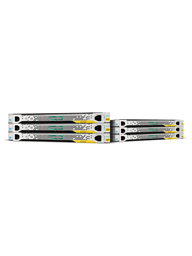

HPE StoreVirtual 4000 Tech Specs:
Multiple models:
- StoreVirtual 4130, 4330, 4335, 4530, 4630 and 4730 are based on Gen8 Proliant
- StoreVirtual 4130
- StoreVirtual 4130 Max nodes 32
- StoreVirtual 4130 Max SFF drives 128
- StoreVirtual 4130 Max capacity 76TB
- StoreVirtual 4330
- StoreVirtual 4330 Max nodes 32
- StoreVirtual 4330 Max SFF drives 256
- StoreVirtual 4330 Max capacity 256TB
- StoreVirtual 4335 (SSD + HDD)
- StoreVirtual 4335 Max nodes 32
- StoreVirtual 4335 Max SFF drives 256
- StoreVirtual 4335 Max capacity 240TB
- StoreVirtual 4530
- StoreVirtual 4530 Max nodes 32
- StoreVirtual 4530 Max LFF drives 384
- StoreVirtual 4530 Max capacity 1536TB
- StoreVirtual 4630 (San for Blade)
- StoreVirtual 4630 Max nodes 32
- StoreVirtual 4630 Max SFF drives 800
- StoreVirtual 4630 Max capacity 720TB
- StoreVirtual 4730
- StoreVirtual 4730 Max nodes 32
- StoreVirtual 4730 Max SFF drives 800
- StoreVirtual 4730 Max capacity 720TB
Features:
- Storage Clustering
- Remote Copy
- Support for 10GbE iSCSI and 8Gb (4330/4730 only) Fibre channel
- Multi site capable
- 450GB, 600GB, 900GB, 1TB, 2TB, 3TB, 4TB and 400GB SSD
- 1Gbe iSCSI/10Gbe iSCSI
- CIFS/NFS/HTTP/FTP with additional Unified NAS Gateway
- Network RAID 5,6 and 10
- Adaptive Optimization
- Thin Provisioning
- Snapshots, SmartClone, Remote Copy
- Scale out architecture
- Easy to use management console
- Application integration
- SQL, VSS, Exchange, VMware, Hyper-V
- VAAI integration
- VSA (virtual San Appliance) for VMware and Hyper-V